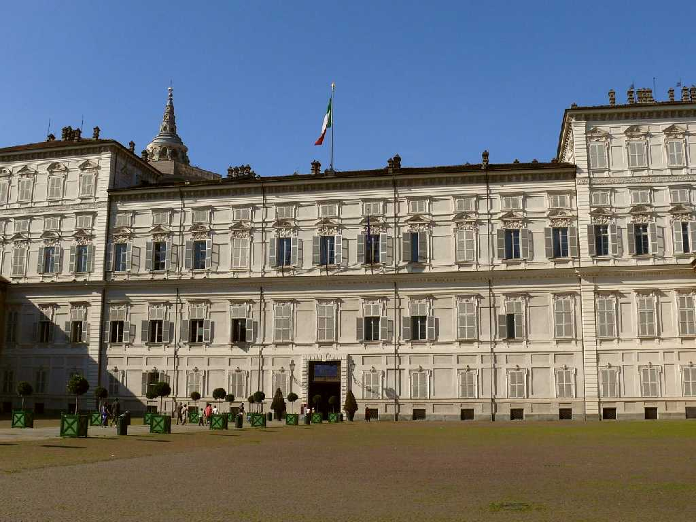
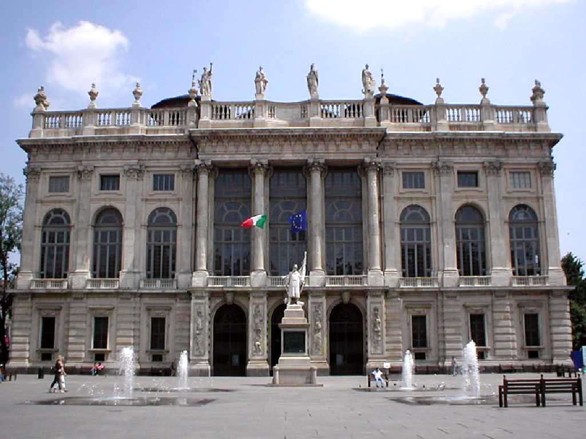
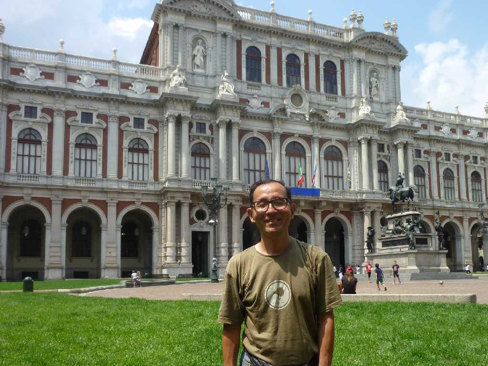

Palazzo Reale Torino
１６世紀に創られたイタリア統一時のサヴォイア家の王宮 イタリア統一の主力を担ったサヴォイア家はイタリアの大部分を統合しその首都トリノに最新技術を駆使した宮殿を造った

Palazzo Madama
ローマ帝国時代の砦跡を利用し１４世紀に築いた王妃のためのマダマ宮殿

July 9 2011 Palazzo Carignano
１７世紀にレンガ造りの宮殿として築かれサルディーニャ王国時代の１８４８年にはイタリア最初の国会議事堂として使われたカリニャーノ宮殿
１８６１年サルデーニャ王ヴィットーリオ・エマヌエーレ２世がイタリアの統一に成功しイタリア王国を樹立し首都をこのトリノにおいた 今年の２０１１年は建国１５０年祭で賑っていた